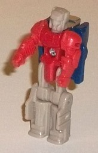
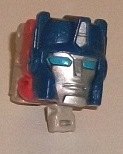
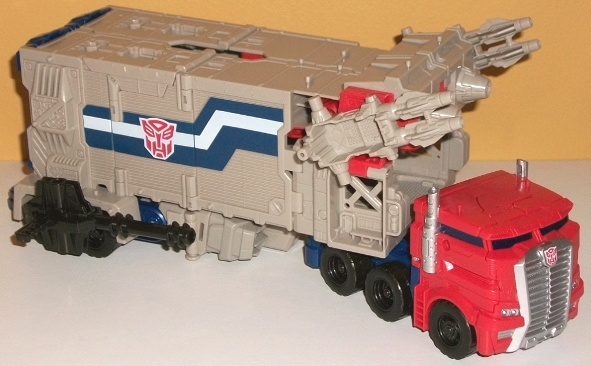
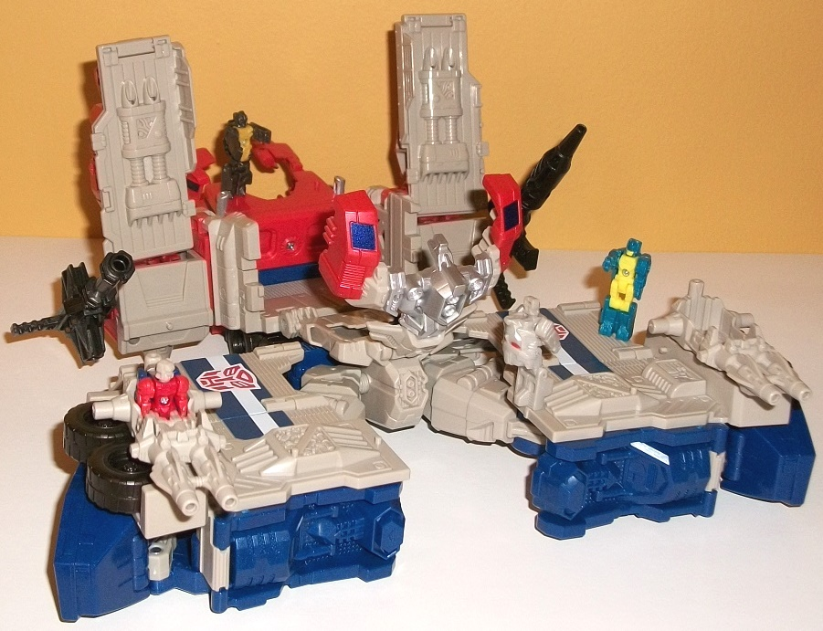
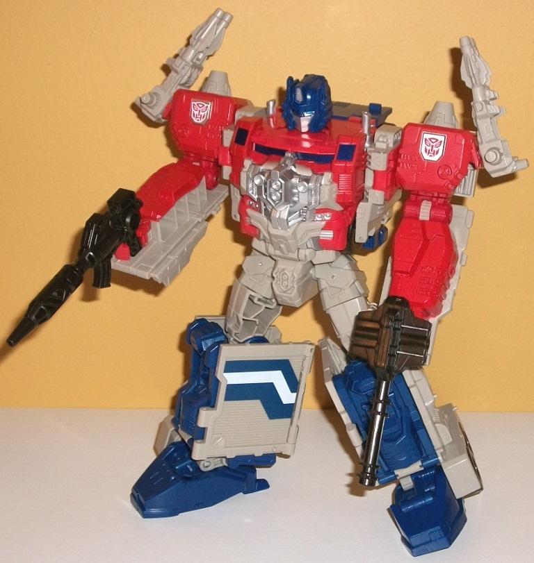

Allegiances
: Autobot
Size
: Leader
Difficulty of Transformation to Base
:
Medium
Difficulty of Transformation to Robot
:
Hard
Color Scheme
: Light pale grayish
tan, light pale red, dark glittery blue, and some charcoal black, silver,
very dark flat navy blue, white, moderately light blue, and very dark metallic
blue
Rating
: 7.9


The
original
Powermaster Optimus Prime toy
had "Apex Armor" in the form of the separate
character "Godbomber", so this version of PM Prime's Titan Master is named
Apex. In robot mode, sculpt-wise he's quite similar to Hi-Q, the little
Powermaster partner from G1, in that he has relatively round, "human-in-armor"
arms, a face with a visor and minor side antennae, some tiny asymmetric
details on the chest, and relatively generic detailing on the legs, with
the mold detailing being a bit more "human-like" than blocky. Unfortunately,
Apex has no paint detailing whatsoever in this mode, and his color scheme
isn't so hot-- the light pale red and rather ugly shade of grayish tan
go together... alright, I guess, but neither are colors that should be
unpainted. At LEAST paint the visor, Hasbro, c'mon... As with all Titan
Masters, Apex can move at the neck, shoulders, hips, and knees, with the
latter two points only moving as one for both legs, since they're pinned/molded
together as one piece. In head mode, Apex gets a much better main color--
dark blue-- with a face that looks very much like Orion Pax's face before
he became Optimus Prime, which is a pretty nice idea for the head underneath
PM Optimus' helmet. The detailing is quite good here, with the center head
crest and face painted silver and the eyes a nice moderately light shade
of the color-- it all looks pretty good against the dark blue. However,
the remnants of Apex's Titan Master mode-- namely the red and gray-tan--
stick out rather obviously from any angle that isn't front-on, and the
abrupt odd color change doesn't look all that hot. Apex either should've
been made mostly dark blue in Titan Master form as well or had some more
paint added.



If you think that Powermaster
Optimus' vehicle mode looks a bit familiar beyond just the G1 toy, you'd
be right-- it's actually an extremely extensive remold of the
Combiner
Wars Ultra Magnus
toy, but it's substantial enough where this isn't
merely a "redeco partial review"-- there's only the "skeleton" of the mold
intact, with pretty much every mold piece beyond the wheels, most of the
truck cab, the hips, and the front of the robot legs changed at least in
sculpting. The trailer has essentially been "sealed up" with various panels,
and he has the usual G1 blue-and-white angled stripe along most of the
sides. The front of the truck cab has also been changed to be more "Optimus-y",
though the front grill is still absurdly large. As with Magnus, the back
end is pretty obviously the lower legs and feet, but the lower legs can
open up for a deluxe-ish sized toy to roll on in there and for PM Optimus
to haul around. The mold detailing can be sparse on some parts like the
top, but there's incredibly-detailed certain areas like on the sides of
the rear section of the trailer and the "beams" near the front sides of
the trailer, with little circuitry and "industrial-like" details quite
common. The cab can turn independently of the trailer like with Magnus,
and the toy has the same two black guns as Magnus, but the missile packs
have been replaced with two dual-gun stations that a Titan Master can fit
into-- sorry, no combined hammer weapon here. The color scheme is partially
classic Optimus Prime, with a slightly pale shade of red being used for
the cab and a few other minor parts, dark blue on the sides, stripes, and
part of the cab. By far the predominant color, though, is an UGLY pale
grayish tan. Why in the heck did Hasbro pick this color? It's not G1-accurate,
it looks awful, and a metallic-ish gray plastic would've been much more
preferable. It looks old and dirty. As far as Titan Masters accomodation,
beyond the aforementioned dual-blasters there's five pegs on the top roof,
two on the roof of the cab, and six pegs on each side of the trailer. Unfortunately
a Titan Master can't fit in a proper cockpit in the cab, but you can leave
them in the helmet when you fold it back in. That said, from a transformational
aspect when you transform Prime back to this mode, it can be rather annoying
to get all the panels to click in just right, especially on the top, so
keep that in mind.
In general base modes
for TFs are already pretty bad, but this mold was originally made to not
have a base mode at all, so it'd be a pretty good guess if you'd suggest
that this toy had an awful base mode. And unfortunately, you'd be right.
It's a little more than halfway between the vehicle and robot modes-- the
appendages have been separated out, but all the panels haven't been folded
away and the cab portion hasn't been integrated into the chest yet. It's
REALLY difficult to look at this and see a base and not just Optimus Prime
doing some malformed splits. The plus side is there's plenty of little
pegs for Titan Masters-- I already mentioned them from the vehicle mode--
and there's good mounting points for all of the weapons. The negative is...
pretty much everything else. The guns on the rear towers are nice detailing,
but other than that they don't really look like "towers". The cab just
kinda sits there in the back, opened for no real reason. I'm not sure why
the chest armor just sticks up in the center for no reason, and the feet
and upper legs are bluntly obvious at the front. I guess the ramps on the
front would make sense for a base-- if they didn't go pretty much right
into the rear towers. Nothing much locks in specifically for this mode,
and I keep having to refer to the instructions to get it right because
it's all just so... random and fan-mode-y. There are clips on the ramps
to connect this to other Titans Returns bases if you so desire, and a little
fold-out stand below the cab to keep everything level, but those are really
the only parts of this figure that seem added specifically for this mode.
It's just best forgotten about.
Given that, again, the
"skeleton" of CW Magnus is intact, the transformation is pretty much the
same, with only a few minor differences here and there-- mostly with a
few extra panels folding around the arms and/or legs (I do quite like how
the sides of the trailer curl around the lower legs, so you don't have
huge panels hanging off those areas). Beyond the curling panels, his legs
are largely the same as Magnus'. He's got the same exact articulation as
Combiner Wars Magnus as well. The arms are a definite downgrade from Ultra
Magnus, though-- the lower arms are unapologetically just molded onto panels
from the sides of the trailer, which is okay for a Legends-class toy, but
definitely NOT okay for a toy of this size. I'm not too picky about hollowness
if it's generally out of the way or small areas, but the huge gaps in the
sides of the arms also just look bad, especially since they're not painted
red like most of the red of the arms. On the other hand, the main body
is extremely impressive, with OODLES of mold detailing upon mold detailing,
with a ton of silver armored-up "stripes" of metal over what looks like
an engine (again, homaging his G1 Powermaster form) above the fake truck
sides like the "headlights" and "windows" on the sides, above the ACTUAL
truck windows below the head. The helmet is very well-sculpted and pretty
much spot-on an update of the Powermaster Prime "Prime with curlers on
the sides of his head" design, though only the eyes from the Titan Master
show through said helmet. The mold detailing is also quite intricate with
"circuitry" and the like on some parts of the lower arms and upper arms
as well, even though it's unfortunately not brought out with paint-- most
of his upper body is just painted over with pale red. Because of the arms
merely being molded onto the tops of his side trailer panels, it's a bit
more difficult for him to hold his guns-- any of them. For the black guns,
there's a slot they have to fit into on the trailer flaps in addition to
simply having him hold them in his hands, and it's not that snug of a fit,
unfortunately, so they can fall out easily. The tan dual-barreled blasters
only have pegs, not really handles, so they fall out even easier, and are
best plugged into the shoulders instead.
Powermaster Optimus
Prime, design-wise, has a fairly strong vehicle mode and an okay robot
mode, but it's a significant step down from the CW Ultra Magnus mold. The
robot mode has really weak-looking and hollow arms, the base mode (like
nearly all TF base modes) is barely more than an afterthought, and the
vehicle mode-- while solid-- is annoying to transform back into, and he
has sooo much of this incredibly ugly pale grayish tan plastic that just
looks awful. Still, mildly recommended with the aforementioned caveats,
as the "core" of the robot mode is nice, he does interact with a lot of
TR figures pretty well, because of his alt mode and all his Titan Master
attachment points.
Review by Beastbot